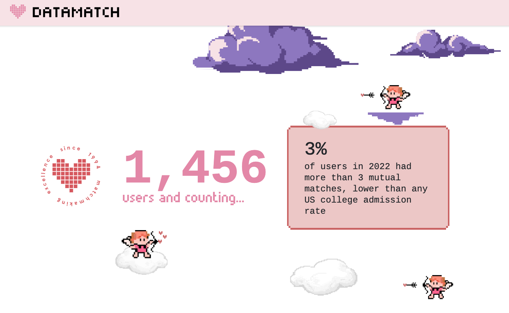

Datamatch
Data analysis & visualization

Connecting college students
Founded by Harvard Computer Society students in 1994, Datamatch is a student-run matchmaking project for friendship and romance. Students complete a playful survey, then receive algorithm-generated matches on Valentine’s Day.
Read about Datamatch ↗2026 in numbers
40 schools · 7,000+ users · 36,000+ matches
Datamatch’s published 2026 summary shows the scale of the project across college campuses.
Top 10 red flags
I cleaned survey data in Python and worked on an analysis and visualization of the top 10 red flags reported by Datamatch users.